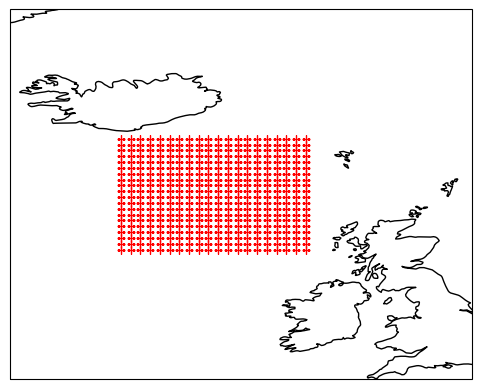

Lagrangian and Eulerian demonstration on ECCO#
seaduck Lagrangian particle demonstration. This version uses the ECCO MITgcm velocity field data available on SciServer.
authors: Wenrui Jiang, Tom Haine Feb ‘23
import cartopy.crs as ccrs
import matplotlib.pyplot as plt
import numpy as np
import seaduck as sd
The ECCO MITgcm run is a low-resolution global state estimate, available on SciServer. The simulation is opened using the OceanSpy package.#
Choose between the monthly-mean data (‘ECCO’) or the daily-mean data (‘daily_ecco’).
See: https://dev-poseidon-ocean.pantheonsite.io/products/datasets/.#
# ecco = ospy.open_oceandataset.from_catalog("ECCO")
# ecco = ospy.open_oceandataset.from_catalog('daily_ecco')
ecco = sd.utils.get_dataset("ecco")
ecco = sd.utils.process_ecco(ecco)
ecco
<xarray.Dataset>
Dimensions: (face: 13, X: 90, Y: 90, time_midp: 2, time: 3, Z: 50, Yp1: 90, Zl: 50, Xp1: 90, Zp1: 51, Zu: 50, nv: 2)
Coordinates: (12/42)
* face (face) int64 0 1 2 3 4 5 6 7 8 9 10 11 12
* X (X) int64 0 1 2 3 4 5 6 7 8 9 ... 80 81 82 83 84 85 86 87 88 89
* Y (Y) int64 0 1 2 3 4 5 6 7 8 9 ... 80 81 82 83 84 85 86 87 88 89
* time_midp (time_midp) datetime64[ns] 1992-01-31T12:00:00 1992-03-01T12:0...
* time (time) datetime64[ns] 1992-01-16T12:00:00 ... 1992-03-16T12:00:00
* Z (Z) float32 -5.0 -15.0 -25.0 ... -5.039e+03 -5.461e+03 -5.906e+03
... ...
rA (face, Y, X) float32 dask.array<chunksize=(13, 90, 90), meta=np.ndarray>
rAs (face, Yp1, X) float32 dask.array<chunksize=(13, 90, 90), meta=np.ndarray>
rAw (face, Y, Xp1) float32 dask.array<chunksize=(13, 90, 90), meta=np.ndarray>
rAz (face, Yp1, Xp1) float32 dask.array<chunksize=(13, 90, 90), meta=np.ndarray>
time_bnds (time, nv) datetime64[ns] dask.array<chunksize=(3, 2), meta=np.ndarray>
timestep (time) int64 dask.array<chunksize=(1,), meta=np.ndarray>
Dimensions without coordinates: nv
Data variables:
UVELMASS1 (Z, face, Y, Xp1) float16 dask.array<chunksize=(25, 7, 45, 45), meta=np.ndarray>
VVELMASS1 (Z, face, Yp1, X) float16 dask.array<chunksize=(25, 7, 45, 45), meta=np.ndarray>
WVELMASS1 (Zl, face, Y, X) float16 dask.array<chunksize=(25, 7, 45, 45), meta=np.ndarray>
UVELMASS (time, Z, face, Y, Xp1) float64 0.0 0.0 0.0 0.0 ... 0.0 0.0 0.0
WVELMASS (time, Zl, face, Y, X) float64 0.0 0.0 0.0 0.0 ... 0.0 0.0 0.0
VVELMASS (time, Z, face, Yp1, X) float64 0.0 0.0 0.0 0.0 ... 0.0 0.0 0.0
SALT (time, Z, face, Y, X) float64 0.2569 0.5572 ... 0.6713 0.9553
SALT_snap (time_midp, Z, face, Y, X) float64 0.986 0.06837 ... 0.903 0.1798
ETAN (time, face, Y, X) float64 0.2569 0.5572 0.553 ... 0.7409 0.5731
ETAN_snap (time_midp, face, Y, X) float64 0.986 0.06837 ... 0.1466 0.8886
Attributes: (12/16)
OceanSpy_description: ECCO v4r4 3D dataset, ocean simulations on LL...
OceanSpy_face_connections: {'face': {0: {'X': ((12, 'Y', False), (3, 'X'...
OceanSpy_grid_coords: {'Y': {'Y': None, 'Yp1': -0.5}, 'X': {'X': No...
OceanSpy_name: ECCO_v4r4
OceanSpy_parameters: {'rSphere': 6371.0, 'eq_state': 'jmd95', 'rho...
date_created: Mon Dec 30 11:13:26 2019
... ...
geospatial_vertical_max: -5.0
geospatial_vertical_min: -5906.25
nx: 90
ny: 90
nz: 50
title: ECCOv4 MITgcm grid informationxarray.Dataset
- face: 13
- X: 90
- Y: 90
- time_midp: 2
- time: 3
- Z: 50
- Yp1: 90
- Zl: 50
- Xp1: 90
- Zp1: 51
- Zu: 50
- nv: 2
- face(face)int640 1 2 3 4 5 6 7 8 9 10 11 12
array([ 0, 1, 2, 3, 4, 5, 6, 7, 8, 9, 10, 11, 12])
- X(X)int640 1 2 3 4 5 6 ... 84 85 86 87 88 89
array([ 0, 1, 2, 3, 4, 5, 6, 7, 8, 9, 10, 11, 12, 13, 14, 15, 16, 17, 18, 19, 20, 21, 22, 23, 24, 25, 26, 27, 28, 29, 30, 31, 32, 33, 34, 35, 36, 37, 38, 39, 40, 41, 42, 43, 44, 45, 46, 47, 48, 49, 50, 51, 52, 53, 54, 55, 56, 57, 58, 59, 60, 61, 62, 63, 64, 65, 66, 67, 68, 69, 70, 71, 72, 73, 74, 75, 76, 77, 78, 79, 80, 81, 82, 83, 84, 85, 86, 87, 88, 89]) - Y(Y)int640 1 2 3 4 5 6 ... 84 85 86 87 88 89
array([ 0, 1, 2, 3, 4, 5, 6, 7, 8, 9, 10, 11, 12, 13, 14, 15, 16, 17, 18, 19, 20, 21, 22, 23, 24, 25, 26, 27, 28, 29, 30, 31, 32, 33, 34, 35, 36, 37, 38, 39, 40, 41, 42, 43, 44, 45, 46, 47, 48, 49, 50, 51, 52, 53, 54, 55, 56, 57, 58, 59, 60, 61, 62, 63, 64, 65, 66, 67, 68, 69, 70, 71, 72, 73, 74, 75, 76, 77, 78, 79, 80, 81, 82, 83, 84, 85, 86, 87, 88, 89]) - time_midp(time_midp)datetime64[ns]1992-01-31T12:00:00 1992-03-01T1...
array(['1992-01-31T12:00:00.000000000', '1992-03-01T12:00:00.000000000'], dtype='datetime64[ns]') - time(time)datetime64[ns]1992-01-16T12:00:00 ... 1992-03-...
array(['1992-01-16T12:00:00.000000000', '1992-02-15T12:00:00.000000000', '1992-03-16T12:00:00.000000000'], dtype='datetime64[ns]') - Z(Z)float32-5.0 -15.0 ... -5.906e+03
array([-5.000000e+00, -1.500000e+01, -2.500000e+01, -3.500000e+01, -4.500000e+01, -5.500000e+01, -6.500000e+01, -7.500500e+01, -8.502500e+01, -9.509500e+01, -1.053100e+02, -1.158700e+02, -1.271500e+02, -1.397400e+02, -1.544700e+02, -1.724000e+02, -1.947350e+02, -2.227100e+02, -2.574700e+02, -2.999300e+02, -3.506800e+02, -4.099300e+02, -4.774700e+02, -5.527100e+02, -6.347350e+02, -7.224000e+02, -8.144700e+02, -9.097400e+02, -1.007155e+03, -1.105905e+03, -1.205535e+03, -1.306205e+03, -1.409150e+03, -1.517095e+03, -1.634175e+03, -1.765135e+03, -1.914150e+03, -2.084035e+03, -2.276225e+03, -2.491250e+03, -2.729250e+03, -2.990250e+03, -3.274250e+03, -3.581250e+03, -3.911250e+03, -4.264250e+03, -4.640250e+03, -5.039250e+03, -5.461250e+03, -5.906250e+03], dtype=float32) - Yp1(Yp1)int640 1 2 3 4 5 6 ... 84 85 86 87 88 89
array([ 0, 1, 2, 3, 4, 5, 6, 7, 8, 9, 10, 11, 12, 13, 14, 15, 16, 17, 18, 19, 20, 21, 22, 23, 24, 25, 26, 27, 28, 29, 30, 31, 32, 33, 34, 35, 36, 37, 38, 39, 40, 41, 42, 43, 44, 45, 46, 47, 48, 49, 50, 51, 52, 53, 54, 55, 56, 57, 58, 59, 60, 61, 62, 63, 64, 65, 66, 67, 68, 69, 70, 71, 72, 73, 74, 75, 76, 77, 78, 79, 80, 81, 82, 83, 84, 85, 86, 87, 88, 89]) - Zl(Zl)float320.0 -10.0 ... -5.244e+03 -5.678e+03
array([ 0. , -10. , -20. , -30. , -40. , -50. , -60. , -70. , -80.01, -90.04, -100.15, -110.47, -121.27, -133.03, -146.45, -162.49, -182.31, -207.16, -238.26, -276.68, -323.18, -378.18, -441.68, -513.26, -592.16, -677.31, -767.49, -861.45, -958.03, -1056.28, -1155.53, -1255.54, -1356.87, -1461.43, -1572.76, -1695.59, -1834.68, -1993.62, -2174.45, -2378. , -2604.5 , -2854. , -3126.5 , -3422. , -3740.5 , -4082. , -4446.5 , -4834. , -5244.5 , -5678. ], dtype=float32) - Xp1(Xp1)int640 1 2 3 4 5 6 ... 84 85 86 87 88 89
array([ 0, 1, 2, 3, 4, 5, 6, 7, 8, 9, 10, 11, 12, 13, 14, 15, 16, 17, 18, 19, 20, 21, 22, 23, 24, 25, 26, 27, 28, 29, 30, 31, 32, 33, 34, 35, 36, 37, 38, 39, 40, 41, 42, 43, 44, 45, 46, 47, 48, 49, 50, 51, 52, 53, 54, 55, 56, 57, 58, 59, 60, 61, 62, 63, 64, 65, 66, 67, 68, 69, 70, 71, 72, 73, 74, 75, 76, 77, 78, 79, 80, 81, 82, 83, 84, 85, 86, 87, 88, 89]) - CS(face, Y, X)float32dask.array<chunksize=(13, 90, 90), meta=np.ndarray>
- coordinate :
- YC XC
- long_name :
- AngleCS
- units :
Array Chunk Bytes 411.33 kiB 411.33 kiB Shape (13, 90, 90) (13, 90, 90) Dask graph 1 chunks in 2 graph layers Data type float32 numpy.ndarray - Depth(face, Y, X)float32dask.array<chunksize=(13, 90, 90), meta=np.ndarray>
- coordinate :
- XC YC
- long_name :
- ocean depth
- standard_name :
- ocean_depth
- units :
- m
Array Chunk Bytes 411.33 kiB 411.33 kiB Shape (13, 90, 90) (13, 90, 90) Dask graph 1 chunks in 2 graph layers Data type float32 numpy.ndarray - HFacC(Z, face, Y, X)float32dask.array<chunksize=(50, 13, 90, 90), meta=np.ndarray>
- long_name :
- vertical fraction of open cell
- standard_name :
- cell_vertical_fraction
- units :
Array Chunk Bytes 20.08 MiB 20.08 MiB Shape (50, 13, 90, 90) (50, 13, 90, 90) Dask graph 1 chunks in 2 graph layers Data type float32 numpy.ndarray - HFacS(Z, face, Yp1, X)float32dask.array<chunksize=(50, 13, 90, 90), meta=np.ndarray>
- long_name :
- vertical fraction of open cell
- standard_name :
- cell_vertical_fraction_at_v_location
- units :
Array Chunk Bytes 20.08 MiB 20.08 MiB Shape (50, 13, 90, 90) (50, 13, 90, 90) Dask graph 1 chunks in 2 graph layers Data type float32 numpy.ndarray - HFacW(Z, face, Y, Xp1)float32dask.array<chunksize=(50, 13, 90, 90), meta=np.ndarray>
- long_name :
- vertical fraction of open cell
- standard_name :
- cell_vertical_fraction_at_u_location
- units :
Array Chunk Bytes 20.08 MiB 20.08 MiB Shape (50, 13, 90, 90) (50, 13, 90, 90) Dask graph 1 chunks in 2 graph layers Data type float32 numpy.ndarray - PHrefC(Z)float32dask.array<chunksize=(50,), meta=np.ndarray>
- long_name :
- Reference Hydrostatic Pressure
- standard_name :
- cell_reference_pressure
- units :
- m2 s-2
Array Chunk Bytes 200 B 200 B Shape (50,) (50,) Dask graph 1 chunks in 2 graph layers Data type float32 numpy.ndarray - PHrefF(Zp1)float32dask.array<chunksize=(51,), meta=np.ndarray>
- long_name :
- Reference Hydrostatic Pressure
- standard_name :
- cell_reference_pressure
- units :
- m2 s-2
Array Chunk Bytes 204 B 204 B Shape (51,) (51,) Dask graph 1 chunks in 2 graph layers Data type float32 numpy.ndarray - SN(face, Y, X)float32dask.array<chunksize=(13, 90, 90), meta=np.ndarray>
- coordinate :
- YC XC
- long_name :
- AngleSN
- units :
Array Chunk Bytes 411.33 kiB 411.33 kiB Shape (13, 90, 90) (13, 90, 90) Dask graph 1 chunks in 2 graph layers Data type float32 numpy.ndarray - XC(face, Y, X)float32dask.array<chunksize=(13, 90, 90), meta=np.ndarray>
- coordinate :
- YC XC
- long_name :
- longitude
- units :
- degrees_east
Array Chunk Bytes 411.33 kiB 411.33 kiB Shape (13, 90, 90) (13, 90, 90) Dask graph 1 chunks in 2 graph layers Data type float32 numpy.ndarray - XG(face, Yp1, Xp1)float32dask.array<chunksize=(13, 90, 90), meta=np.ndarray>
- coordinate :
- YG XG
- long_name :
- longitude
- units :
- degrees_east
Array Chunk Bytes 411.33 kiB 411.33 kiB Shape (13, 90, 90) (13, 90, 90) Dask graph 1 chunks in 2 graph layers Data type float32 numpy.ndarray - YC(face, Y, X)float32dask.array<chunksize=(13, 90, 90), meta=np.ndarray>
- coordinate :
- YC XC
- long_name :
- latitude
- units :
- degrees_north
Array Chunk Bytes 411.33 kiB 411.33 kiB Shape (13, 90, 90) (13, 90, 90) Dask graph 1 chunks in 2 graph layers Data type float32 numpy.ndarray - YG(face, Yp1, Xp1)float32dask.array<chunksize=(13, 90, 90), meta=np.ndarray>
- long_name :
- latitude
- units :
- degrees_north
Array Chunk Bytes 411.33 kiB 411.33 kiB Shape (13, 90, 90) (13, 90, 90) Dask graph 1 chunks in 2 graph layers Data type float32 numpy.ndarray - Zp1(Zp1)float320.0 -10.0 ... -5.678e+03 -6.134e+03
- long_name :
- vertical coordinate of cell interface
- positive :
- down
- standard_name :
- depth_at_w_location
- units :
- m
array([ 0. , -10. , -20. , -30. , -40. , -50. , -60. , -70. , -80.01, -90.04, -100.15, -110.47, -121.27, -133.03, -146.45, -162.49, -182.31, -207.16, -238.26, -276.68, -323.18, -378.18, -441.68, -513.26, -592.16, -677.31, -767.49, -861.45, -958.03, -1056.28, -1155.53, -1255.54, -1356.87, -1461.43, -1572.76, -1695.59, -1834.68, -1993.62, -2174.45, -2378. , -2604.5 , -2854. , -3126.5 , -3422. , -3740.5 , -4082. , -4446.5 , -4834. , -5244.5 , -5678. , -6134.5 ], dtype=float32) - Zu(Zu)float32-10.0 -20.0 ... -6.134e+03
- long_name :
- vertical coordinate of lower cell interface
- positive :
- down
- standard_name :
- depth_at_upper_w_location
- units :
- m
array([ -10. , -20. , -30. , -40. , -50. , -60. , -70. , -80.01, -90.04, -100.15, -110.47, -121.27, -133.03, -146.45, -162.49, -182.31, -207.16, -238.26, -276.68, -323.18, -378.18, -441.68, -513.26, -592.16, -677.31, -767.49, -861.45, -958.03, -1056.28, -1155.53, -1255.54, -1356.87, -1461.43, -1572.76, -1695.59, -1834.68, -1993.62, -2174.45, -2378. , -2604.5 , -2854. , -3126.5 , -3422. , -3740.5 , -4082. , -4446.5 , -4834. , -5244.5 , -5678. , -6134.5 ], dtype=float32) - drC(Zp1)float32dask.array<chunksize=(51,), meta=np.ndarray>
- long_name :
- cell z size
- standard_name :
- cell_z_size_at_w_location
- units :
- m
Array Chunk Bytes 204 B 204 B Shape (51,) (51,) Dask graph 1 chunks in 2 graph layers Data type float32 numpy.ndarray - drF(Z)float32dask.array<chunksize=(50,), meta=np.ndarray>
- long_name :
- cell z size
- standard_name :
- cell_z_size
- units :
- m
Array Chunk Bytes 200 B 200 B Shape (50,) (50,) Dask graph 1 chunks in 2 graph layers Data type float32 numpy.ndarray - dxC(face, Y, Xp1)float32dask.array<chunksize=(13, 90, 90), meta=np.ndarray>
- coordinate :
- YC XG
- long_name :
- cell x size
- standard_name :
- cell_x_size_at_u_location
- units :
- m
Array Chunk Bytes 411.33 kiB 411.33 kiB Shape (13, 90, 90) (13, 90, 90) Dask graph 1 chunks in 2 graph layers Data type float32 numpy.ndarray - dxG(face, Yp1, X)float32dask.array<chunksize=(13, 90, 90), meta=np.ndarray>
- coordinate :
- YG XC
- long_name :
- cell x size
- standard_name :
- cell_x_size_at_v_location
- units :
- m
Array Chunk Bytes 411.33 kiB 411.33 kiB Shape (13, 90, 90) (13, 90, 90) Dask graph 1 chunks in 2 graph layers Data type float32 numpy.ndarray - dyC(face, Yp1, X)float32dask.array<chunksize=(13, 90, 90), meta=np.ndarray>
- coordinate :
- YG XC
- long_name :
- cell y size
- standard_name :
- cell_y_size_at_v_location
- units :
- m
Array Chunk Bytes 411.33 kiB 411.33 kiB Shape (13, 90, 90) (13, 90, 90) Dask graph 1 chunks in 2 graph layers Data type float32 numpy.ndarray - dyG(face, Y, Xp1)float32dask.array<chunksize=(13, 90, 90), meta=np.ndarray>
- coordinate :
- YC XG
- long_name :
- cell y size
- standard_name :
- cell_y_size_at_u_location
- units :
- m
Array Chunk Bytes 411.33 kiB 411.33 kiB Shape (13, 90, 90) (13, 90, 90) Dask graph 1 chunks in 2 graph layers Data type float32 numpy.ndarray - k(Z)int64dask.array<chunksize=(50,), meta=np.ndarray>
- axis :
- Z
- long_name :
- z-dimension of the t grid
- swap_dim :
- Z
Array Chunk Bytes 400 B 400 B Shape (50,) (50,) Dask graph 1 chunks in 2 graph layers Data type int64 numpy.ndarray - k_l(Zl)int64dask.array<chunksize=(50,), meta=np.ndarray>
- axis :
- Z
- c_grid_axis_shift :
- -0.5
- long_name :
- z-dimension of the w grid
- swap_dim :
- Zl
Array Chunk Bytes 400 B 400 B Shape (50,) (50,) Dask graph 1 chunks in 2 graph layers Data type int64 numpy.ndarray - k_p1(Zp1)int64dask.array<chunksize=(51,), meta=np.ndarray>
- axis :
- Z
- c_grid_axis_shift :
- [-0.5, 0.5]
- long_name :
- z-dimension of the w grid
- swap_dim :
- Zp1
Array Chunk Bytes 408 B 408 B Shape (51,) (51,) Dask graph 1 chunks in 2 graph layers Data type int64 numpy.ndarray - k_u(Zu)int64dask.array<chunksize=(50,), meta=np.ndarray>
- axis :
- Z
- c_grid_axis_shift :
- 0.5
- long_name :
- z-dimension of the w grid
- swap_dim :
- Zu
Array Chunk Bytes 400 B 400 B Shape (50,) (50,) Dask graph 1 chunks in 2 graph layers Data type int64 numpy.ndarray - maskC(Z, face, Y, X)int8dask.array<chunksize=(50, 13, 90, 90), meta=np.ndarray>
- long_name :
- mask denoting wet point at center
- standard_name :
- sea_binary_mask_at_t_location
Array Chunk Bytes 5.02 MiB 5.02 MiB Shape (50, 13, 90, 90) (50, 13, 90, 90) Dask graph 1 chunks in 2 graph layers Data type int8 numpy.ndarray - maskS(Z, face, Yp1, X)int8dask.array<chunksize=(50, 13, 90, 90), meta=np.ndarray>
- long_name :
- mask denoting wet point at interface
- standard_name :
- cell_vertical_fraction_at_v_location
Array Chunk Bytes 5.02 MiB 5.02 MiB Shape (50, 13, 90, 90) (50, 13, 90, 90) Dask graph 1 chunks in 2 graph layers Data type int8 numpy.ndarray - maskW(Z, face, Y, Xp1)int8dask.array<chunksize=(50, 13, 90, 90), meta=np.ndarray>
- long_name :
- mask denoting wet point at interface
- standard_name :
- cell_vertical_fraction_at_u_location
Array Chunk Bytes 5.02 MiB 5.02 MiB Shape (50, 13, 90, 90) (50, 13, 90, 90) Dask graph 1 chunks in 2 graph layers Data type int8 numpy.ndarray - rA(face, Y, X)float32dask.array<chunksize=(13, 90, 90), meta=np.ndarray>
- coordinate :
- YC XC
- long_name :
- cell area
- standard_name :
- cell_area
- units :
- m2
Array Chunk Bytes 411.33 kiB 411.33 kiB Shape (13, 90, 90) (13, 90, 90) Dask graph 1 chunks in 2 graph layers Data type float32 numpy.ndarray - rAs(face, Yp1, X)float32dask.array<chunksize=(13, 90, 90), meta=np.ndarray>
- coordinate :
- YG XC
- long_name :
- cell area
- standard_name :
- cell_area_at_v_location
- units :
- m2
Array Chunk Bytes 411.33 kiB 411.33 kiB Shape (13, 90, 90) (13, 90, 90) Dask graph 1 chunks in 2 graph layers Data type float32 numpy.ndarray - rAw(face, Y, Xp1)float32dask.array<chunksize=(13, 90, 90), meta=np.ndarray>
- coordinate :
- YG XC
- long_name :
- cell area
- standard_name :
- cell_area_at_u_location
- units :
- m2
Array Chunk Bytes 411.33 kiB 411.33 kiB Shape (13, 90, 90) (13, 90, 90) Dask graph 1 chunks in 2 graph layers Data type float32 numpy.ndarray - rAz(face, Yp1, Xp1)float32dask.array<chunksize=(13, 90, 90), meta=np.ndarray>
- coordinate :
- YG XG
- long_name :
- cell area
- standard_name :
- cell_area_at_f_location
- units :
- m
Array Chunk Bytes 411.33 kiB 411.33 kiB Shape (13, 90, 90) (13, 90, 90) Dask graph 1 chunks in 2 graph layers Data type float32 numpy.ndarray - time_bnds(time, nv)datetime64[ns]dask.array<chunksize=(3, 2), meta=np.ndarray>
- long_name :
- time bounds of averaging period
Array Chunk Bytes 48 B 48 B Shape (3, 2) (3, 2) Dask graph 1 chunks in 2 graph layers Data type datetime64[ns] numpy.ndarray - timestep(time)int64dask.array<chunksize=(1,), meta=np.ndarray>
- long_name :
- model timestep number
Array Chunk Bytes 24 B 8 B Shape (3,) (1,) Dask graph 3 chunks in 2 graph layers Data type int64 numpy.ndarray
- UVELMASS1(Z, face, Y, Xp1)float16dask.array<chunksize=(25, 7, 45, 45), meta=np.ndarray>
- long_name :
- X-Comp of Geometry-Weighted Velocity (m/s)
- mate :
- VVELMASS
- original_output :
- monthly mean
- standard_name :
- UVELMASS
- units :
- m/s
Array Chunk Bytes 10.04 MiB 692.14 kiB Shape (50, 13, 90, 90) (25, 7, 45, 45) Dask graph 16 chunks in 2 graph layers Data type float16 numpy.ndarray - VVELMASS1(Z, face, Yp1, X)float16dask.array<chunksize=(25, 7, 45, 45), meta=np.ndarray>
- long_name :
- Y-Comp of Geometry-Weighted Velocity (m/s)
- mate :
- UVELMASS
- original_output :
- monthly mean
- standard_name :
- VVELMASS
- units :
- m/s
Array Chunk Bytes 10.04 MiB 692.14 kiB Shape (50, 13, 90, 90) (25, 7, 45, 45) Dask graph 16 chunks in 2 graph layers Data type float16 numpy.ndarray - WVELMASS1(Zl, face, Y, X)float16dask.array<chunksize=(25, 7, 45, 45), meta=np.ndarray>
- long_name :
- Vertical Comp of Velocity (m/s)
- original_output :
- monthly mean
- standard_name :
- upward_sea_water_velocity
- units :
- m/s
Array Chunk Bytes 10.04 MiB 692.14 kiB Shape (50, 13, 90, 90) (25, 7, 45, 45) Dask graph 16 chunks in 2 graph layers Data type float16 numpy.ndarray - UVELMASS(time, Z, face, Y, Xp1)float640.0 0.0 0.0 0.0 ... 0.0 0.0 0.0 0.0
array([[[[[ 0.00000000e+00, 0.00000000e+00, 0.00000000e+00, ..., 0.00000000e+00, 0.00000000e+00, 0.00000000e+00], [ 0.00000000e+00, 0.00000000e+00, 0.00000000e+00, ..., 0.00000000e+00, 0.00000000e+00, 0.00000000e+00], [ 0.00000000e+00, 0.00000000e+00, 0.00000000e+00, ..., 0.00000000e+00, 0.00000000e+00, 0.00000000e+00], ..., [ 4.12292480e-02, 3.69567871e-02, 3.78723145e-02, ..., 2.51617432e-02, 2.88391113e-02, 3.23791504e-02], [ 5.52978516e-02, 5.51452637e-02, 5.87768555e-02, ..., 3.08990479e-02, 3.22570801e-02, 3.43017578e-02], [ 7.32421875e-02, 7.67211914e-02, 8.12377930e-02, ..., 3.92761230e-02, 3.82080078e-02, 3.82690430e-02]], [[ 8.83178711e-02, 9.33837891e-02, 9.55810547e-02, ..., 4.92248535e-02, 4.67834473e-02, 4.54101562e-02], [ 8.78906250e-02, 9.29565430e-02, 9.16137695e-02, ..., 5.92651367e-02, 5.60302734e-02, 5.37109375e-02], [ 7.05566406e-02, 7.40356445e-02, 7.05566406e-02, ..., 6.74438477e-02, 6.48803711e-02, 6.26831055e-02], ... [ 0.00000000e+00, 0.00000000e+00, 0.00000000e+00, ..., 0.00000000e+00, 0.00000000e+00, 0.00000000e+00], [ 0.00000000e+00, 0.00000000e+00, 0.00000000e+00, ..., 0.00000000e+00, 0.00000000e+00, 0.00000000e+00], [ 0.00000000e+00, 0.00000000e+00, 0.00000000e+00, ..., 0.00000000e+00, 0.00000000e+00, 0.00000000e+00]], [[ 0.00000000e+00, 0.00000000e+00, 0.00000000e+00, ..., 0.00000000e+00, 0.00000000e+00, 0.00000000e+00], [ 0.00000000e+00, 0.00000000e+00, 0.00000000e+00, ..., 0.00000000e+00, 0.00000000e+00, 0.00000000e+00], [ 0.00000000e+00, 0.00000000e+00, 0.00000000e+00, ..., 0.00000000e+00, 0.00000000e+00, 0.00000000e+00], ..., [ 0.00000000e+00, 0.00000000e+00, 0.00000000e+00, ..., 0.00000000e+00, 0.00000000e+00, 0.00000000e+00], [ 0.00000000e+00, 0.00000000e+00, 0.00000000e+00, ..., 0.00000000e+00, 0.00000000e+00, 0.00000000e+00], [ 0.00000000e+00, 0.00000000e+00, 0.00000000e+00, ..., 0.00000000e+00, 0.00000000e+00, 0.00000000e+00]]]]]) - WVELMASS(time, Zl, face, Y, X)float640.0 0.0 0.0 0.0 ... 0.0 0.0 0.0 0.0
array([[[[[ 0.00000000e+00, 0.00000000e+00, 0.00000000e+00, ..., 0.00000000e+00, 0.00000000e+00, 0.00000000e+00], [ 0.00000000e+00, 0.00000000e+00, 0.00000000e+00, ..., 0.00000000e+00, 0.00000000e+00, 0.00000000e+00], [ 0.00000000e+00, 0.00000000e+00, 0.00000000e+00, ..., 0.00000000e+00, 0.00000000e+00, 0.00000000e+00], ..., [-0.00000000e+00, -0.00000000e+00, -0.00000000e+00, ..., -0.00000000e+00, -0.00000000e+00, -0.00000000e+00], [-0.00000000e+00, -0.00000000e+00, -0.00000000e+00, ..., -0.00000000e+00, -0.00000000e+00, -0.00000000e+00], [-0.00000000e+00, -0.00000000e+00, -0.00000000e+00, ..., -0.00000000e+00, -0.00000000e+00, -0.00000000e+00]], [[-0.00000000e+00, -0.00000000e+00, -0.00000000e+00, ..., -0.00000000e+00, -0.00000000e+00, -0.00000000e+00], [-0.00000000e+00, -0.00000000e+00, -0.00000000e+00, ..., -0.00000000e+00, -0.00000000e+00, -0.00000000e+00], [-0.00000000e+00, -0.00000000e+00, -0.00000000e+00, ..., -0.00000000e+00, -0.00000000e+00, -0.00000000e+00], ... [ 0.00000000e+00, 0.00000000e+00, 0.00000000e+00, ..., 0.00000000e+00, 0.00000000e+00, 0.00000000e+00], [ 0.00000000e+00, 0.00000000e+00, 0.00000000e+00, ..., 0.00000000e+00, 0.00000000e+00, 0.00000000e+00], [ 0.00000000e+00, 0.00000000e+00, 0.00000000e+00, ..., 0.00000000e+00, 0.00000000e+00, 0.00000000e+00]], [[ 0.00000000e+00, 0.00000000e+00, 0.00000000e+00, ..., 0.00000000e+00, 0.00000000e+00, 0.00000000e+00], [ 0.00000000e+00, 0.00000000e+00, 0.00000000e+00, ..., 0.00000000e+00, 0.00000000e+00, 0.00000000e+00], [ 0.00000000e+00, 0.00000000e+00, 0.00000000e+00, ..., 0.00000000e+00, 0.00000000e+00, 0.00000000e+00], ..., [ 0.00000000e+00, 0.00000000e+00, 0.00000000e+00, ..., 0.00000000e+00, 0.00000000e+00, 0.00000000e+00], [ 0.00000000e+00, 0.00000000e+00, 0.00000000e+00, ..., 0.00000000e+00, 0.00000000e+00, 0.00000000e+00], [ 0.00000000e+00, 0.00000000e+00, 0.00000000e+00, ..., 0.00000000e+00, 0.00000000e+00, 0.00000000e+00]]]]]) - VVELMASS(time, Z, face, Yp1, X)float640.0 0.0 0.0 0.0 ... 0.0 0.0 0.0 0.0
array([[[[[ 0.00000000e+00, 0.00000000e+00, 0.00000000e+00, ..., 0.00000000e+00, 0.00000000e+00, 0.00000000e+00], [ 0.00000000e+00, 0.00000000e+00, 0.00000000e+00, ..., 0.00000000e+00, 0.00000000e+00, 0.00000000e+00], [ 0.00000000e+00, 0.00000000e+00, 0.00000000e+00, ..., 0.00000000e+00, 0.00000000e+00, 0.00000000e+00], ..., [ 4.76074219e-02, 3.91235352e-02, 3.56445312e-02, ..., -7.71713257e-03, -7.88116455e-03, -7.05337524e-03], [ 5.32226562e-02, 3.98559570e-02, 3.46069336e-02, ..., -6.88171387e-03, -7.14874268e-03, -6.40487671e-03], [ 5.47485352e-02, 3.80249023e-02, 3.35083008e-02, ..., -2.93350220e-03, -4.25720215e-03, -5.00869751e-03]], [[ 5.23986816e-02, 3.51562500e-02, 3.52172852e-02, ..., 2.58636475e-03, 1.02579594e-04, -2.82096863e-03], [ 4.85229492e-02, 3.37829590e-02, 4.23889160e-02, ..., 9.02557373e-03, 5.72204590e-03, 3.54766846e-04], [ 4.43725586e-02, 3.55224609e-02, 5.53588867e-02, ..., 1.63116455e-02, 1.20391846e-02, 3.94058228e-03], ... [ 0.00000000e+00, 0.00000000e+00, 0.00000000e+00, ..., 0.00000000e+00, 0.00000000e+00, 0.00000000e+00], [ 0.00000000e+00, 0.00000000e+00, 0.00000000e+00, ..., 0.00000000e+00, 0.00000000e+00, 0.00000000e+00], [ 0.00000000e+00, 0.00000000e+00, 0.00000000e+00, ..., 0.00000000e+00, 0.00000000e+00, 0.00000000e+00]], [[ 0.00000000e+00, 0.00000000e+00, 0.00000000e+00, ..., 0.00000000e+00, 0.00000000e+00, 0.00000000e+00], [ 0.00000000e+00, 0.00000000e+00, 0.00000000e+00, ..., 0.00000000e+00, 0.00000000e+00, 0.00000000e+00], [ 0.00000000e+00, 0.00000000e+00, 0.00000000e+00, ..., 0.00000000e+00, 0.00000000e+00, 0.00000000e+00], ..., [ 0.00000000e+00, 0.00000000e+00, 0.00000000e+00, ..., 0.00000000e+00, 0.00000000e+00, 0.00000000e+00], [ 0.00000000e+00, 0.00000000e+00, 0.00000000e+00, ..., 0.00000000e+00, 0.00000000e+00, 0.00000000e+00], [ 0.00000000e+00, 0.00000000e+00, 0.00000000e+00, ..., 0.00000000e+00, 0.00000000e+00, 0.00000000e+00]]]]]) - SALT(time, Z, face, Y, X)float640.2569 0.5572 ... 0.6713 0.9553
array([[[[[2.56892671e-01, 5.57240005e-01, 5.52961948e-01, ..., 4.65353493e-01, 8.94136094e-01, 7.76561354e-02], [2.89907438e-01, 6.40343944e-01, 9.76597792e-01, ..., 3.41931097e-01, 9.63959190e-01, 5.19163050e-01], [6.43038517e-01, 4.40631737e-01, 9.34883974e-01, ..., 3.91470988e-01, 5.41980338e-01, 2.23007990e-01], ..., [4.89873427e-01, 9.91166455e-01, 3.19059982e-01, ..., 1.63737185e-01, 1.02777339e-01, 3.15862057e-01], [6.15687818e-01, 7.56891970e-01, 6.68258137e-01, ..., 8.66292000e-01, 1.11146150e-02, 9.18728551e-01], [5.18888632e-01, 9.40372408e-01, 2.92085532e-01, ..., 3.45165121e-02, 1.05545555e-01, 2.99518903e-01]], [[4.77490444e-01, 9.84459596e-01, 4.58917177e-01, ..., 8.59177625e-01, 4.07405263e-01, 5.49552970e-01], [1.22836712e-02, 9.52204210e-01, 4.78973352e-01, ..., 7.22882304e-02, 5.04501152e-01, 7.03331459e-01], [7.29147583e-01, 1.84437808e-01, 7.24663239e-02, ..., 3.31777036e-01, 7.83450014e-02, 3.34254832e-01], ... [5.19870751e-01, 1.23726880e-01, 3.70171231e-01, ..., 9.40984241e-01, 9.35505125e-01, 3.38446327e-01], [6.16714755e-01, 7.65064850e-01, 2.76919004e-02, ..., 6.77657455e-01, 7.01614741e-01, 7.73485761e-01], [1.48548119e-01, 9.34216208e-02, 9.64240332e-02, ..., 6.71768631e-01, 4.14579604e-02, 3.05543522e-01]], [[3.88970384e-01, 2.57528999e-01, 4.11276228e-01, ..., 5.37436175e-02, 6.79136364e-01, 8.53148013e-01], [8.15061220e-01, 9.83407330e-01, 8.26233816e-01, ..., 2.67465934e-01, 7.37905405e-01, 1.51649311e-01], [7.61656360e-01, 2.72964102e-01, 9.13017462e-01, ..., 1.74397309e-01, 3.99762778e-01, 3.28496198e-01], ..., [2.45089813e-01, 4.70905517e-01, 6.04312454e-01, ..., 4.02767966e-01, 6.34721794e-01, 8.03690442e-01], [9.40027520e-01, 4.56402609e-01, 7.83695990e-01, ..., 2.35383572e-01, 5.70827402e-01, 4.32731806e-01], [2.38190892e-01, 2.70492081e-01, 2.81310682e-01, ..., 9.29777949e-01, 6.71343000e-01, 9.55251765e-01]]]]]) - SALT_snap(time_midp, Z, face, Y, X)float640.986 0.06837 ... 0.903 0.1798
array([[[[[9.85993144e-01, 6.83702541e-02, 8.56891726e-01, ..., 5.88487238e-01, 9.06603658e-01, 2.93542252e-01], [8.29981078e-01, 6.52007345e-01, 5.65309151e-01, ..., 9.85015001e-01, 2.32306630e-01, 5.38591553e-01], [9.11697788e-01, 5.10640815e-01, 5.93981879e-01, ..., 2.06798528e-01, 7.00950151e-02, 6.90432173e-01], ..., [7.25760894e-01, 4.17758152e-01, 2.59350105e-01, ..., 5.95339821e-01, 5.68661417e-01, 5.58669340e-01], [6.49903934e-01, 8.16418237e-01, 7.61657589e-01, ..., 5.41277561e-01, 4.09809073e-01, 7.34330512e-03], [5.17829063e-01, 1.88911624e-01, 4.63308556e-01, ..., 9.38335268e-01, 7.73088585e-01, 8.60308422e-01]], [[3.57853895e-01, 1.00287879e-01, 3.31027484e-01, ..., 4.27414206e-02, 3.29318665e-01, 7.96646563e-01], [7.33404217e-01, 4.31263238e-01, 9.94150540e-01, ..., 7.78344957e-01, 4.59433348e-01, 3.85520731e-01], [2.78802182e-01, 5.97085568e-01, 2.95021777e-01, ..., 9.09649891e-01, 5.20510326e-01, 8.06390595e-01], ... [4.24349924e-01, 5.39304191e-01, 6.14121800e-01, ..., 3.95453120e-01, 4.96466855e-01, 4.41394105e-01], [6.05859801e-01, 8.60418469e-01, 4.89005763e-01, ..., 7.39216856e-01, 8.88189019e-01, 5.62598715e-01], [6.14490102e-01, 7.45512417e-01, 8.64855327e-01, ..., 6.87661762e-01, 5.18553842e-01, 7.83730062e-01]], [[6.11396526e-02, 1.87185548e-01, 7.71168476e-01, ..., 6.82264554e-01, 2.61258845e-01, 2.03166689e-01], [7.26096291e-01, 7.28211721e-01, 6.21049338e-01, ..., 4.28812832e-01, 7.81357572e-01, 9.18280807e-01], [5.06456079e-01, 2.76275858e-01, 4.01633710e-01, ..., 6.60025307e-01, 9.17096781e-01, 9.21739464e-01], ..., [6.19097386e-01, 4.56037338e-01, 9.17982314e-01, ..., 3.17303742e-01, 6.56638819e-01, 8.74037905e-01], [3.46039034e-01, 6.44721631e-01, 4.95689549e-01, ..., 6.40259863e-01, 5.60558987e-01, 2.33254958e-01], [1.99759460e-01, 1.94819338e-01, 6.17326164e-01, ..., 6.94773670e-02, 9.02989799e-01, 1.79795107e-01]]]]]) - ETAN(time, face, Y, X)float640.2569 0.5572 ... 0.7409 0.5731
array([[[[2.56892671e-01, 5.57240005e-01, 5.52961948e-01, ..., 4.65353493e-01, 8.94136094e-01, 7.76561354e-02], [2.89907438e-01, 6.40343944e-01, 9.76597792e-01, ..., 3.41931097e-01, 9.63959190e-01, 5.19163050e-01], [6.43038517e-01, 4.40631737e-01, 9.34883974e-01, ..., 3.91470988e-01, 5.41980338e-01, 2.23007990e-01], ..., [4.89873427e-01, 9.91166455e-01, 3.19059982e-01, ..., 1.63737185e-01, 1.02777339e-01, 3.15862057e-01], [6.15687818e-01, 7.56891970e-01, 6.68258137e-01, ..., 8.66292000e-01, 1.11146150e-02, 9.18728551e-01], [5.18888632e-01, 9.40372408e-01, 2.92085532e-01, ..., 3.45165121e-02, 1.05545555e-01, 2.99518903e-01]], [[4.77490444e-01, 9.84459596e-01, 4.58917177e-01, ..., 8.59177625e-01, 4.07405263e-01, 5.49552970e-01], [1.22836712e-02, 9.52204210e-01, 4.78973352e-01, ..., 7.22882304e-02, 5.04501152e-01, 7.03331459e-01], [7.29147583e-01, 1.84437808e-01, 7.24663239e-02, ..., 3.31777036e-01, 7.83450014e-02, 3.34254832e-01], ... [1.59386774e-01, 5.97851646e-01, 3.62901542e-01, ..., 7.79056397e-01, 2.50907134e-01, 4.77373855e-01], [9.72867762e-01, 5.33072009e-01, 6.79472885e-01, ..., 4.65878668e-01, 1.24276599e-01, 5.87222979e-01], [2.45354153e-01, 2.30178675e-01, 5.74997140e-02, ..., 7.36133747e-01, 4.66114109e-01, 2.75389992e-01]], [[3.49088125e-01, 8.45953574e-01, 2.34782631e-01, ..., 7.40676567e-01, 2.19766902e-01, 9.18698761e-01], [5.10110342e-01, 3.22814002e-01, 6.50978877e-01, ..., 1.91487050e-01, 5.50754003e-01, 1.60487129e-01], [8.77925700e-01, 8.49351658e-01, 9.25543613e-01, ..., 5.14462579e-01, 8.65605216e-01, 3.22343585e-01], ..., [2.11609635e-01, 8.73216441e-02, 2.29380765e-01, ..., 2.80285714e-01, 9.46209352e-01, 4.05360595e-01], [8.58327389e-01, 3.94480655e-01, 5.93623676e-01, ..., 2.82904414e-01, 7.84962201e-01, 8.81406853e-01], [5.89685852e-01, 1.33838819e-02, 5.92612490e-01, ..., 4.90327401e-01, 7.40924754e-01, 5.73057858e-01]]]]) - ETAN_snap(time_midp, face, Y, X)float640.986 0.06837 ... 0.1466 0.8886
array([[[[9.85993144e-01, 6.83702541e-02, 8.56891726e-01, ..., 5.88487238e-01, 9.06603658e-01, 2.93542252e-01], [8.29981078e-01, 6.52007345e-01, 5.65309151e-01, ..., 9.85015001e-01, 2.32306630e-01, 5.38591553e-01], [9.11697788e-01, 5.10640815e-01, 5.93981879e-01, ..., 2.06798528e-01, 7.00950151e-02, 6.90432173e-01], ..., [7.25760894e-01, 4.17758152e-01, 2.59350105e-01, ..., 5.95339821e-01, 5.68661417e-01, 5.58669340e-01], [6.49903934e-01, 8.16418237e-01, 7.61657589e-01, ..., 5.41277561e-01, 4.09809073e-01, 7.34330512e-03], [5.17829063e-01, 1.88911624e-01, 4.63308556e-01, ..., 9.38335268e-01, 7.73088585e-01, 8.60308422e-01]], [[3.57853895e-01, 1.00287879e-01, 3.31027484e-01, ..., 4.27414206e-02, 3.29318665e-01, 7.96646563e-01], [7.33404217e-01, 4.31263238e-01, 9.94150540e-01, ..., 7.78344957e-01, 4.59433348e-01, 3.85520731e-01], [2.78802182e-01, 5.97085568e-01, 2.95021777e-01, ..., 9.09649891e-01, 5.20510326e-01, 8.06390595e-01], ... [9.07057417e-01, 7.95292466e-01, 2.49538943e-01, ..., 6.26736059e-03, 3.62303108e-01, 3.96060982e-01], [7.95896429e-01, 9.34198700e-01, 6.51216171e-03, ..., 2.31482248e-01, 5.71231143e-03, 5.96332381e-01], [4.07726289e-01, 1.15368557e-01, 9.04105560e-01, ..., 5.12020487e-02, 1.12351637e-01, 6.07775208e-01]], [[9.67925525e-01, 4.85424570e-01, 2.54157442e-01, ..., 2.35391392e-02, 8.77714100e-01, 5.10421800e-01], [8.78315281e-01, 9.39062609e-01, 5.57846221e-01, ..., 2.88067304e-01, 2.43117393e-01, 1.90884970e-01], [3.49280243e-01, 2.07940584e-01, 6.09623445e-01, ..., 6.15577891e-01, 3.30972641e-01, 3.41558323e-01], ..., [1.49262147e-01, 6.64245378e-01, 1.44274519e-02, ..., 4.16453886e-01, 7.90488785e-01, 9.10395809e-01], [5.42911294e-01, 2.49797478e-01, 3.07078535e-01, ..., 4.72471552e-01, 4.48483207e-01, 2.02003262e-01], [8.35114536e-01, 4.37465333e-01, 6.28553265e-01, ..., 2.11303291e-01, 1.46647220e-01, 8.88599742e-01]]]])
- OceanSpy_description :
- ECCO v4r4 3D dataset, ocean simulations on LLC90 grid (monthly mean output)
- OceanSpy_face_connections :
- {'face': {0: {'X': ((12, 'Y', False), (3, 'X', False)), 'Y': (None, (1, 'Y', False))}, 1: {'X': ((11, 'Y', False), (4, 'X', False)), 'Y': ((0, 'Y', False), (2, 'Y', False))}, 2: {'X': ((10, 'Y', False), (5, 'X', False)), 'Y': ((1, 'Y', False), (6, 'X', False))}, 3: {'X': ((0, 'X', False), (9, 'Y', False)), 'Y': (None, (4, 'Y', False))}, 4: {'X': ((1, 'X', False), (8, 'Y', False)), 'Y': ((3, 'Y', False), (5, 'Y', False))}, 5: {'X': ((2, 'X', False), (7, 'Y', False)), 'Y': ((4, 'Y', False), (6, 'Y', False))}, 6: {'X': ((2, 'Y', False), (7, 'X', False)), 'Y': ((5, 'Y', False), (10, 'X', False))}, 7: {'X': ((6, 'X', False), (8, 'X', False)), 'Y': ((5, 'X', False), (10, 'Y', False))}, 8: {'X': ((7, 'X', False), (9, 'X', False)), 'Y': ((4, 'X', False), (11, 'Y', False))}, 9: {'X': ((8, 'X', False), None), 'Y': ((3, 'X', False), (12, 'Y', False))}, 10: {'X': ((6, 'Y', False), (11, 'X', False)), 'Y': ((7, 'Y', False), (2, 'X', False))}, 11: {'X': ((10, 'X', False), (12, 'X', False)), 'Y': ((8, 'Y', False), (1, 'X', False))}, 12: {'X': ((11, 'X', False), None), 'Y': ((9, 'Y', False), (0, 'X', False))}}}
- OceanSpy_grid_coords :
- {'Y': {'Y': None, 'Yp1': -0.5}, 'X': {'X': None, 'Xp1': -0.5}, 'Z': {'Z': None, 'Zp1': 0.5, 'Zu': 0.5, 'Zl': -0.5}, 'time': {'time': -0.5, 'time_midp': None}}
- OceanSpy_name :
- ECCO_v4r4
- OceanSpy_parameters :
- {'rSphere': 6371.0, 'eq_state': 'jmd95', 'rho0': 1027, 'g': 9.81, 'eps_nh': 0, 'omega': 7.292123516990373e-05, 'c_p': 3986.0, 'tempFrz0': 0.0901, 'dTempFrz_dS': -0.0575}
- date_created :
- Mon Dec 30 11:13:26 2019
- geospatial_lat_max :
- 90.0
- geospatial_lat_min :
- -90.0
- geospatial_lon_max :
- 180.0
- geospatial_lon_min :
- -179.9991912841797
- geospatial_vertical_max :
- -5.0
- geospatial_vertical_min :
- -5906.25
- nx :
- 90
- ny :
- 90
- nz :
- 50
- title :
- ECCOv4 MITgcm grid information
Initialize seaduck package. Then set the debug level.#
sd.rcParam[
"debug_level"
] = "very_high" # Options are: 'high','very_high','not that high'
Specify the parameters for the particles (number, positions, start time).#
# Define the extend of the box
west = -19.0
east = -9.0
south = 57.0
north = 63.0
shallow = -10.0
deep = -10.0
time = "1992-02-15"
Nlon = 20 # How many along longitudinal direction?
Nlat = 20 # How many along latitudinal direction?
Ndep = 1 # How many along vertical direction?
x, y, z, t = sd.utils.easy_3d_cube(
(east, west, Nlon),
(south, north, Nlat),
(shallow, deep, Ndep),
time,
print_total_number=True,
)
A total 400 positions defined.
# x,y,z,t =
# # Change the number of particles here
# N = int(1e2)
# # Change the vertical depth of the particles here
# levels = np.array([-5])
# sqrtN = int(np.sqrt(N))
# # Change the longitude and latitude positions of the particles here
# xx = np.linspace(-19, -9, sqrtN)
# yy = np.linspace(63, 57, sqrtN)
# # Compute intermediate grid variables
# xxx, yyy = np.meshgrid(xx, yy)
# x = xxx.ravel()
# y = yyy.ravel()
# x, z = np.meshgrid(x, levels)
# y, z = np.meshgrid(y, levels)
# x = x.ravel()
# y = y.ravel()
# z = z.ravel()
# # Change the times here
# start_time = "1998-12-15"
# t = (
# np.array([np.datetime64(start_time) for i in x]) - np.datetime64("1970-01-01")
# ) / np.timedelta64(1, "s")
Plot the particle positions#
ax = plt.axes(projection=ccrs.PlateCarree())
ax.plot(x, y, "r+")
ax.coastlines()
ax.set_xlim([-25, 0])
ax.set_ylim([50, 70])
plt.show()

Let’s explore the interpolation function in seaduck:#
help(sd.OceInterp)
Help on function OceInterp in module seaduck.oceinterp:
OceInterp(od, varList, x, y, z, t, kernelList=None, lagrangian=False, lagrange_kwarg={}, update_stops='default', return_in_between=True, return_pt_time=True, kernel_kwarg={})
Interp for people who just want to take a quick look.
**This is the centerpiece function of the package, through which
you can access almost all of its functionality.**.
**Parameters:**
+ od: OceInterp.OceData object or xarray.Dataset (limited support for netCDF Dataset)
The dataset to work on.
+ varList: str or list
A list of variable or pair of variables.
+ kernelList: OceInterp.KnW or list of OceInterp.KnW objects
Indicates which kernel to use for each interpolation.
+ x, y, z: numpy.ndarray
The location of the particles, where x and y are in degrees,
and z is in meters (deeper locations are represented by more negative values).
+ t: numpy.ndarray
In the Eulerian scheme, this represents the time of interpolation.
In the Lagrangian scheme, it represents the time needed for output.
+ lagrangian: bool
Specifies whether the interpolation is done in the Eulerian or Lagrangian scheme.
+ lagrange_kwarg: dict
Keyword arguments passed into the OceInterp.lagrangian.particle object.
+ update_stops: None, 'default', or iterable of float
Specifies the time to update the prefetch velocity.
+ return_in_between: bool
In Lagrangian mode, this returns the interpolation not only at time t,
but also at every point in time when the speed is updated.
+ return_pt_time: bool
Specifies whether to return the time of all the steps.
+ kernel_kwarg: dict
keyword arguments to pass into seaduck.KnW object.
Interpolate these ECCO fields onto the particle positions.#
[s, (u, v), eta, mask] = sd.OceInterp(
ecco, ["SALT", ("UVELMASS", "VVELMASS"), "ETAN", "maskC"], x, y, z, t
)
Plot the interpolated salinity field.#
ax = plt.axes(projection=ccrs.PlateCarree())
c = ax.scatter(x, y, c=s)
ax.coastlines()
ax.set_xlim([-25, 0])
ax.set_ylim([50, 70])
plt.colorbar(c)
plt.title("Salinity (psu)")
Text(0.5, 1.0, 'Salinity (psu)')
Plot the interpolated \(u\) field.#
ax = plt.axes(projection=ccrs.PlateCarree())
c = ax.scatter(x, y, c=u)
ax.coastlines()
ax.set_xlim([-25, 0])
ax.set_ylim([50, 70])
plt.colorbar(c)
plt.title("Zonal Velocity (m/s)")
Text(0.5, 1.0, 'Zonal Velocity (m/s)')
Plot the interpolated \(\\eta\) field.#
ax = plt.axes(projection=ccrs.PlateCarree())
c = ax.scatter(x, y, c=eta)
ax.coastlines()
ax.set_xlim([-25, 0])
ax.set_ylim([50, 70])
plt.colorbar(c)
plt.title("Sea Surface Height (m)")
Text(0.5, 1.0, 'Sea Surface Height (m)')
Now compute Lagrangian trajectories for these particles.#
Define the start_time and end_time. Here the particles are integrated backwards in time.#
start_time = "1992-01-17"
end_time = "1992-03-12"
t_bnds = np.array(
[
np.datetime64(start_time) - np.datetime64("1970-01-01"),
np.datetime64(end_time) - np.datetime64("1970-01-01"),
]
) / np.timedelta64(1, "s")
Perform the particle trajectory simulation.#
Record the salinity along the particle trajectories as well as their (lat,lon) positions.#
stops, [s, raw, lat, lon] = sd.OceInterp(
ecco,
["SALT", "__particle.raw", "__particle.lat", "__particle.lon"],
x,
y,
z,
t_bnds,
lagrangian=True,
return_pt_time=True,
lagrange_kwarg={"save_raw": True},
)
There are 4 output times. See also the diagnostic output from running the integration.#
stops
(696859200.0, 699451200.0, 700358400.0)
The raw output is a vector of OceInterp objects with position information#
raw
[<seaduck.eulerian.position at 0x7fa434de0f10>,
<seaduck.eulerian.position at 0x7fa4343ac2b0>,
<seaduck.eulerian.position at 0x7fa434f148e0>]
Plot the interpolated salinity field on the final particle positions.#
ax = plt.axes(projection=ccrs.PlateCarree())
ax.scatter(lon[-1], lat[-1], c=s[-1], s=1)
ax.coastlines()
ax.set_xlim([-70, 0])
ax.set_ylim([30, 70])
plt.title("salinity map")
Text(0.5, 1.0, 'salinity map')
There are some other OceInterp classes:#
1. Kernel object#
KnW = sd.kernel_weight.KnW
Define derivative kernels for#
\(\\partial / \\partial z\), \(\\partial^2 / \\partial x^2\), and \(\\partial / \\partial t\).
default = KnW()
dz_kernel = KnW(vkernel="dz")
dx2_kernel = KnW(
hkernel="dx", h_order=2, inheritance=[[0, 1, 2, 3, 4, 5, 6, 7, 8]], tkernel="linear"
)
dt_kernel = KnW(tkernel="dt")
Apply the kernels to the ECCO fields:#
[dsdz, (d2udx2, dvdt)] = sd.OceInterp(
ecco,
{"SALT": dz_kernel, ("UVELMASS", "VVELMASS"): (dx2_kernel, dt_kernel)},
x,
y,
z,
t,
)
result will be in the order of ['SALT', ('UVELMASS', 'VVELMASS')]
Plot one of the differentiated fields on the initial particle positions.#
ax = plt.axes(projection=ccrs.PlateCarree())
c = ax.scatter(x, y, c=d2udx2)
ax.coastlines()
ax.set_xlim([-25, 0])
ax.set_ylim([50, 70])
plt.colorbar(c)
plt.title("Second Derivative of the Zonal Velocity (m/s per grid scale squared)")
Text(0.5, 1.0, 'Second Derivative of the Zonal Velocity (m/s per grid scale squared)')